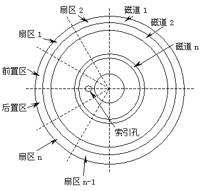

讨论了很多有关文件的内容，你可能会产生这样的问题就是这些文件在磁盘上究竟是如何存储的？这个问题所涉及的知识很广，如果让我们从"磁"与"电"的关系与转化谈起那么足可以再写一本书。在这一节里我不准备更多地深入讨论细节问题，而是介绍一些有关磁盘的初步知识，重点在于系统提供的功能调用。
在我们的系统中主要有两种外存储设备--软盘和硬盘。软盘一般被称为移动盘，因为盘片和驱动器可以分离；硬盘一般被称为固定盘，它的盘片和驱动器是密封在一起的。我们通常使用的软盘有四种规格，从体积上分有5.25英寸和3.5英寸两种，每种磁盘又有两种密度--倍密度（360K，720K）和高密度（1.2M，1.44M）。
早期的5寸盘还有低密度（320K），现已淘汰；最新的软盘有3.5英寸2.88M的，还有光磁软盘，但这些设备离普及还有一段距离。
硬盘的容量一般很大，早期的有10M，20M容量的，而后发展至40M，80M......，目前一台奔腾级的电脑配备1.2GB或2.1GB容量的硬盘不算奢侈。从性能上讲不同的软盘，软盘与硬盘之间有很大的差异，然而它们最基本的结构都是相同的。当然，我这里所说的结构指得是它们的"软"结构，也就是磁盘的格式。
一张新的软盘在使用之前首先要进行"格式化"，这是大家都清楚的规定。那么究竟什么是格式化？这可能就不是所有人都知道了。从磁电的相互转换关系来看好象不必进行什么格式化操作也能在磁盘上保存数据，我们通常使用录音磁带时从来没做过格式化，声音照样保存在磁带上，为什么磁盘在使用前要做格式化呢？
我们先来考虑这样一个问题，如果我们现在需要从一盘磁带上找到第三首歌，可能会花多少时间？如果这盘磁带我们从未听过，那么想找到其中某一首歌恐怕要费一些周折。而如果我们从磁盘上寻找某个文件，即使这片磁盘我们也是初次使用，恐怕也只需要几秒钟就能找到所要的文件，甚至可能用更少的时间。
因为每片磁盘上都记录有一个目录表，想找个文件只要用"DIR"命令就可以了。可谁听说过哪盘磁带上录着歌名呢！这话说得一点儿也不假，但说得不够深入。
如果我们把磁带上的声音也看做是信息的话，那么我们应该说信息在磁盘上和磁带上的组织形式是有区别的。信息在磁盘上肯定以某种不同于磁带的形式组织在一起，这种组织形式可以使计算机以及计算机用户能够在很短的时间内找到所需的信息。我想这样说可能有助于大家的理解。实际上在这一节我们主要讨论的内容就是信息（数据）在磁盘上的组织形式。
为了搞清这个问题，我们需先来看看磁盘与驱动器的结构。其实驱动器和我们目前使用的电唱机有些相似，它最主要的部分就是驱动主轴和磁头。主轴带动盘片旋转，磁头由一个电机驱动可以沿盘片径向运动。至于盘片，样子和唱片差不多，只不过是由软材料制成。这样的一种机械结构使得磁头可以很快速的定位于盘片的某一位置，比磁带的快进、快退要方便得多。
见过电唱机唱片的朋友都知道，电唱片上刻有一些记录着声音的很密的沟纹，这些沟纹称为声轨。磁盘上虽没有看得见的沟纹，但实际上磁盘上的数据也是记录在一个个"轨道"之中，这些记录着信息的"轨道"被称为"磁道"。与唱片不同的是这些磁道是相互独立的，是一组以磁盘中心为圆心的同心圆，而唱片上的声轨是一整条螺旋线。
由于磁道的相互独立，所以磁头相对盘片的运动也是"跳跃"的，即磁头只能从某个磁道直接"推进"到其它磁道，而不能定位在两个磁道之间。当然，我这里说的仅限于PC系列电脑，其它的计算机可能有例外情况，实际上磁头究竟如何运动取决于系统硬件设计。
我们知道唱片上的声轨记录的都是声音而无其它信息，是不是磁道上记录的也都是我们需要的数据呢？如果你说每条磁道上记录的都是数据，这倒没什么错误，但是这些数据的用途并不一样。有些数据是我们"写入"到磁盘中的，而有些数据完全是供计算机硬件使用的。这是因为计算机把每一条磁道又进行了更细致地划分，它把每条磁道分成若干小的区域来储存用户数据，这些小区域并非首尾相联，它们之间有一些间隙，计算机为了能够方便地找到任意一个小数据区，它特意在这些间隙中保存了一些磁信号，利用这些磁信号给这些小区域定位。这些所谓磁信号对我们来说就是一些数据，然而这些数据和我们存到磁盘上的数据有不同的用途。
由于这些小数据区分布在圆周上，它们的形状象一个个扇形，所以我们习惯上称这些数据区为"扇区"，因此，一片磁盘的实际情况应该是由图7-4所示，划分为一系列的扇区和磁道，同时还包含了供硬件使用的信息。

在一片新买的磁盘中是不包含这些结构的，我们之所以要给新盘片进行格式化其实就是为了对磁盘做一些划分，把那些供硬件使用的信号先存入磁盘，这样计算机才能正确地找到保存用户数据的区域。试想如果不进行这样细致地划分，而把各种数据一疙瘩一块地塞进磁盘，我想即使是计算机这种高技术的产物也难以从乱糟糟的信号中找到真正有用的。
这里有一个较为微妙的问题就是每一个扇区究竟可以容纳多少用户数据？对于一片"正常"的磁盘而言，用户可以在一个扇区内存入512个字节的数据；而在一些不大"正常"的磁盘上却包含了一些容量为128字节、256字节或1024字节的异常扇区。